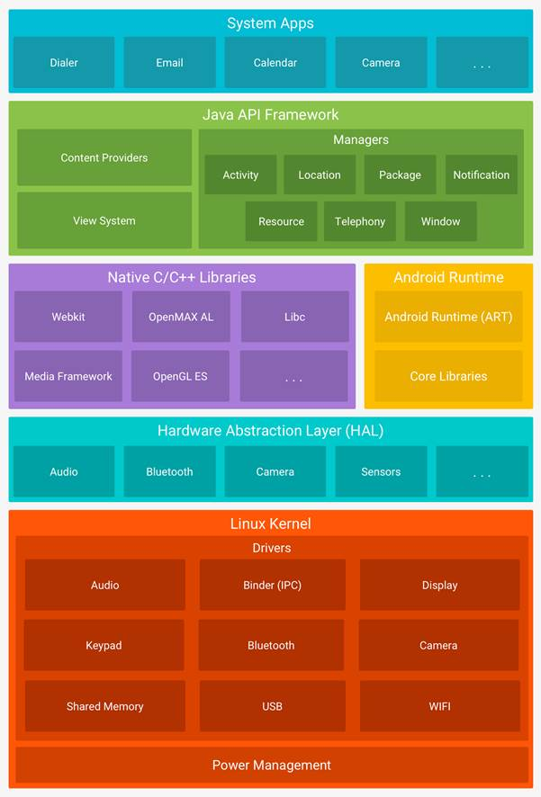

Android Architecture
Android is an open source, Linux-based software stack created for a wide array of devices and form factors. The following diagram shows the major components of the Android platform.

Figure 1. The Android software stack.
The
Linux Kernel
The foundation of the Android platform is the Linux kernel. For example, the Android Runtime (ART) relies on the Linux kernel for underlying functionalities such as threading and low-level memory management.
Using a Linux kernel allows Android to take advantage of key security features and allows device manufacturers to develop hardware drivers for a well-known kernel.
Hardware
Abstraction Layer (HAL)
The hardware abstraction layer (HAL) provides standard interfaces that expose device hardware capabilities to the higher-level Java API framework. The HAL consists of multiple library modules, each of which implements an interface for a specific type of hardware component, such as the camera or bluetooth module. When a framework API makes a call to access device hardware, the Android system loads the library module for that hardware component.
Android
Runtime
For devices running Android version 5.0 (API level 21) or higher, each app runs in its own process and with its own instance of the Android Runtime (ART). ART is written to run multiple virtual machines on low-memory devices by executing DEX files, a bytecode format designed specially for Android that's optimized for minimal memory footprint. Build toolchains, such as Jack, compile Java sources into DEX bytecode, which can run on the Android platform.
Some of the major features of ART include the following:
· Ahead-of-time (AOT) and just-in-time (JIT) compilation
· Optimized garbage collection (GC)
· Better debugging support, including a dedicated sampling profiler, detailed diagnostic exceptions and crash reporting, and the ability to set watchpoints to monitor specific fields
Prior to Android version 5.0 (API level 21), Dalvik was the Android runtime. If your app runs well on ART, then it should work on Dalvik as well, but the reverse may not be true.
Android also includes a set of core runtime libraries that provide most of the functionality of the Java programming language, including some Java 8 language features, that the Java API framework uses.
Native
C/C++ Libraries
Many core Android system components and services, such as ART and HAL, are built from native code that require native libraries written in C and C++. The Android platform provides Java framework APIs to expose the functionality of some of these native libraries to apps. For example, you can access OpenGL ES through the Android framework’s Java OpenGL API to add support for drawing and manipulating 2D and 3D graphics in your app.
If you are developing an app that requires C or C++ code, you can use the Android NDK to access some of these native platform libraries directly from your native code.
Java
API Framework
The entire feature-set of the Android OS is available to you through APIs written in the Java language. These APIs form the building blocks you need to create Android apps by simplifying the reuse of core, modular system components and services, which include the following:
· A rich and extensible View System you can use to build an app’s UI, including lists, grids, text boxes, buttons, and even an embeddable web browser
· A Resource Manager, providing access to non-code resources such as localized strings, graphics, and layout files
· A Notification Manager that enables all apps to display custom alerts in the status bar
· An Activity Manager that manages the lifecycle of apps and provides a common navigation back stack
· Content Providers that enable apps to access data from other apps, such as the Contacts app, or to share their own data
Developers have full access to the same framework APIs that Android system apps use.
System
Apps
Android comes with a set of core apps for email, SMS messaging, calendars, internet browsing, contacts, and more. Apps included with the platform have no special status among the apps the user chooses to install. So a third-party app can become the user's default web browser, SMS messenger, or even the default keyboard (some exceptions apply, such as the system's Settings app).
The system apps function both as apps for users and to provide key capabilities that developers can access from their own app. For example, if your app would like to deliver an SMS message, you don't need to build that functionality yourself—you can instead invoke whichever SMS app is already installed to deliver a message to the recipient you specify.